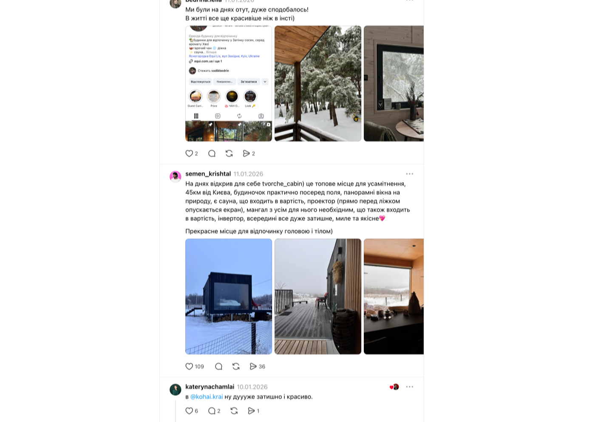
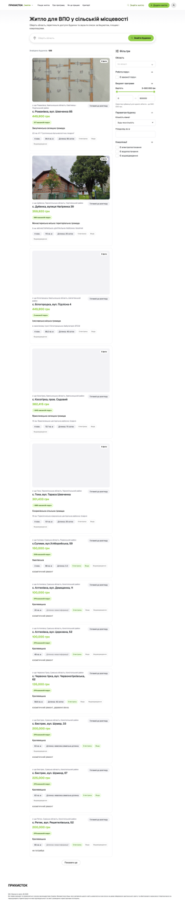

Частина 1
Конкуренти
Український ринок поділено на три групи: прямий конкурент, непрямі гравці з тією ж задачею та міжнародні аспіраційні еталони. Повного збігу досягає рівно один гравець — Hutshub.
| Вісь | Hutshub | OLX «Житло подобово» | Booking.com (UA) | Airbnb (UA) | karpaty.rocks |
|---|---|---|---|---|---|
| Аудиторія | Компанія 4 осіб, бездітний вікенд, 90% бронювань до 3 діб ↗ | Будь-хто, подобово й довгостроково | Туристи, бізнес, бюджет і преміум | Глобальні мандрівники; в українській видачі є реальні села — Космач, Ясіня, Пилипець | Карпатський турист |
| Основа продукту | Курований маркетплейс котеджів на природі | Дошка оголошень без модерації | Глобальний агрегатор житла | Глобальний маркетплейс цілих помешкань і кімнат | Довідник плюс контент про гори |
| Ключовий механізм | Пошук → добірки → оплата на платформі | Пошук → прямий контакт із власником | Пошук → фільтри → миттєве підтвердження | Пошук → картки з рейтингом → онлайн-оплата | Перегляд → дзвінок власнику |
| Довіра | 3 осі відгуків; бейджа «Перевірено» немає | Відсутня як механізм | Відгук лише після проживання | Обов'язкова верифікація особи, відгук лише після проживання, верифікація розташування оголошення | Відгуків і верифікації немає |
| Монетизація | 10% з власника, перші 5 безкоштовно ↗ | Платне просування | 15% за даними ЗМІ | 15,5% host-only за даними ЗМІ | Безкоштовне розміщення |
Комісія 10% — оферта Hutshub, §14, дослівно «Розмір комісії складає 10% від загальної суми Бронювання Користувача». Статистика 2025 — Forbes, 03.02.2026. Комісія Airbnb — 15,5% host-only. Dobovo до вибірки не входить: він продає квартири в містах, а нас цікавить окреме житло в селі.
Три спільні патерни ринку
1. Пошук за трьома параметрами
Локація, дати, гості — стандарт категорії незалежно від масштабу, від OLX до Booking.
2. Емоційне групування
Продають сценарій відпочинку, а не характеристики: у Hutshub це «Без сусідів поруч», в Airbnb — тематичні категорії на головній.
3. Ніхто не гарантує повноцінних умов
З ~20 перевірених платформ жодна не обіцяє, що в оселі буде світло, вода й інтернет, і не відповідає грошима, якщо їх не буде.
Три ключові відмінності
Наявність транзакції. Спектр від «немає взагалі» (karpaty.rocks — лише дзвінок власнику) через «прямий контакт без календаря» (OLX) до повного онлайн-чекауту з оплатою на платформі (Hutshub, Booking, Airbnb). Саме наявність транзакції визначає, чи може платформа взагалі щось гарантувати: без грошей, що проходять через неї, обіцянка нічим не забезпечена.
Джерело довіри. Чотири різні моделі серед п'яти гравців. Відгук лише від того, хто реально проживав (Booking, Airbnb) — найсуворіша. Верифікація особи плюс перевірка розташування оголошення (Airbnb) — єдина, що прив'язує лістинг до фізичного місця. Заявлена курація без видимого підтвердження (Hutshub) — обіцянка на слово. І повна відсутність механізму (OLX, karpaty.rocks), де гість залишений сам на сам із оголошенням.
Хто платить платформі. Комісія з власника за результат (Hutshub, Booking, Airbnb) проти платного просування й безкоштовного розміщення (OLX, karpaty.rocks). Друга модель структурно конфліктує з якістю: видимість купується, а не заробляється.
Чого на ринку немає
Сезонного строку ринок не продає взагалі. Не «продає погано», а не продає: «Оренда мінімум на рік, або платіть х3 за сезон. Шукаєте житло на 3–4 місяці зимового періоду? Вам розсміються в обличчя» — киянка Ольга Крячко, LB.ua. Платформи подобової оренди живуть із вікендів: 90% бронювань Hutshub не довші за три доби, а серед ~95 статей його блогу немає жодної про блекаут чи зимівлю. Довга оренда живе на OLX, де про тепло й світло не написано нічого. Між цими двома світами порожньо — і саме туди їде людина, якій треба перебути сезон.
Менш очевидне, але не менш порожнє: культурного пласту села не продає ніхто. Платформи описують оселю через зручності й краєвид — чан, камін, вид на гори, — але не через те, у що людина потрапляє, приїхавши. Серед 206 категорій Hutshub немає жодної зі словами «хата», «село», «садиба», «автентична»; свята й обряди не фігурують ніде.
Що попит на це існує, показує суміжний формат, якого немає в жодній із трьох груп — авторські табори. «Різдво в Криворівні» продає п'ять днів гуцульського Різдва з колядою, Святвечором, майстерками й ватрою: люди платять не за ночівлю, а за приналежність. Це не наш конкурент — там спільнота й розклад зміни, тоді як ми про усамітнення. Але він доводить, що культурний пласт продається сам по собі, і що на платформах бронювання його ніхто не чіпає.
З дитиною й твариною доводиться питати дозволу. Ніде не написано наперед, тому людина питає щоразу — і виправдовується наперед. Наводжу приклад. Під оголошенням про хату в горах: «З собакою можна?», а нижче — «Нас три подруги і французький бульдог Луна… а ще ми охайні». А найпопулярніший коментар найбільшого треда — про тварину, «ого ще і собаку до 25 кг можна», 74 вподобання.
У нас це не фільтр і не опція за доплату: кожна хата приймає з дітьми й тваринами, і це не коштує окремо. Питати не треба — умова однакова скрізь, і написана вона на вході, а не в коментарях.
І останнє — іноземці, які живуть в Україні або приїздять до близьких. Це не лише ті, хто працює звідси й потребує світла та інтернету. Це й партнери українців: українка везе свого норвежця у Витачів на березі Дніпра — показати село, річку і їжу, якої ніде більше у світі немає. Для неї це не подорож, а знайомство з рідним. Жодна з перевірених українських платформ не має повноцінної англійської версії, розрахованої на такого гостя — ні поясненого контексту, ні підказок, що тут відбувається і чому це важливо.
Головний висновок частини
Hutshub не конкурент, а сусід по ринку — і він сам це закріпив у правилах. Його вимоги до розміщення дослівно вимагають, щоб будинок стояв «за межами житлових забудов», а критерії відбору суто архітектурні. Жодної вимоги до електрики, води, інтернету чи опалення. Їхні правила структурно виключають саме те, що пропонуємо ми: живу хату в живому селі — з фінансовою гарантією, що всі побутові умови будуть. Вони говорять про архітектуру, а ми про надійність.



